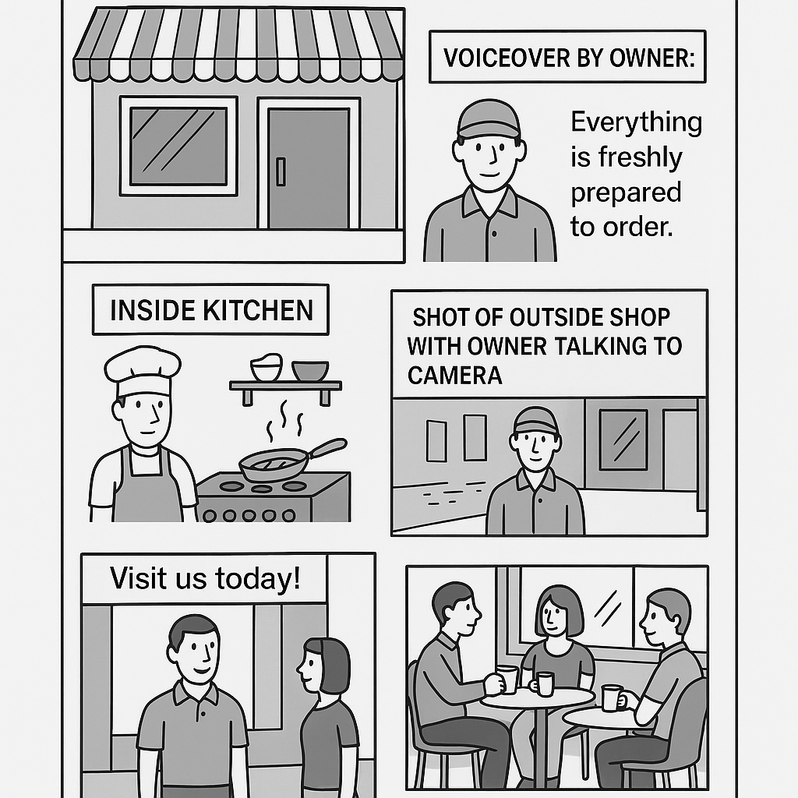

9‑Mark Ninja – Extended Answer Trainer
Learn how to build a top band (Level 3) 9‑mark answer by working through each training stage.
Scenario
Rollin Café storyboard – 9‑mark question
Figure 1 shows a storyboard for an advert for Rollin Café.
Discuss the suitability of this storyboard for use by the director.
- Marks are awarded for suggesting improvements to the storyboard.
- You must explain how each suggestion will help the director.
- Use correct script / storyboard terminology.

Stage: 1 / 4
Total score: 0
9‑Mark Skill Meter
Band: not yet classified
You can move back and forth between stages. Your best score is kept.